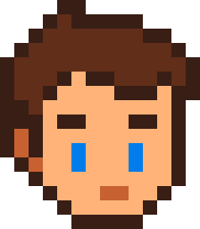

Concevoir avec sobriété
Des pages légères, des images optimisées et des fonctionnalités choisies pour limiter le superflu.
Studio web engagé · Normandie
L’écologie guide notre façon de concevoir le web. Nous créons des sites utiles, accessibles et légers, en limitant le superflu à chaque étape.
Notre raison d’être
Dual Code est un studio web indépendant à Caen. Notre première motivation est de rendre le numérique plus responsable, en créant des sites qui vont à l’essentiel et répondent à de vrais besoins.
Nous faisons des choix attentifs sur les contenus, les images et les fonctionnalités. Nous expliquons aussi les options d’hébergement disponibles, sans promettre de résultat écologique que nous ne pouvons pas vérifier.
Rencontrer l'équipeNos choix au quotidien
La sobriété numérique n’est pas une option ajoutée à la fin : elle guide la conception dès le départ.
Des pages légères, des images optimisées et des fonctionnalités choisies pour limiter le superflu.
Un site accessible, facile à faire évoluer et pensé pour rester utile dans le temps.
Des conseils transparents sur les outils et l’hébergement, selon les besoins de votre projet.
Notre priorité : faire des choix numériques plus sobres et vous expliquer clairement leurs avantages comme leurs limites.
Une équipe à deux regards
Il s'occupe du fonctionnement technique, de la sécurité et de la mise en ligne de votre site. Il vous accompagne aussi pour le domaine et l'hébergement.

Front-end & interfaceIl imagine et intègre l'interface pour rendre votre site accueillant, facile à utiliser et agréable sur téléphone comme sur ordinateur.
Un numérique plus responsable
Chaque projet est l’occasion de faire des choix plus sobres, adaptés à votre activité et à vos visiteurs.
Une présence en ligne claire et utile, pensée pour éviter les pages lourdes et les fonctions inutiles.
Nous vous aidons à comprendre les choix techniques et à privilégier des solutions cohérentes avec vos besoins.
Questions fréquentes
Les questions que vous pouvez vous poser sur un site plus sobre.
C’est un site pensé pour répondre aux besoins avec le moins de ressources numériques superflues possible : contenus utiles, images optimisées et fonctionnalités choisies avec soin. Cela ne signifie pas qu’il a un impact nul.
Oui. La sobriété ne veut pas dire austérité. Le design reste adapté à votre identité ; nous évitons surtout les éléments lourds ou décoratifs qui n’apportent rien à vos visiteurs.
Nous concevons des pages lisibles et utilisables sur téléphone comme sur ordinateur, avec une navigation claire. L’accessibilité est prise en compte dès la conception, sans revendiquer de certification non vérifiée.
Pas nécessairement. Nous pouvons comparer les options disponibles avec vous, en tenant compte des informations fournies par les hébergeurs, de vos besoins et de votre budget.
Le tarif dépend du contenu, du nombre de pages et des fonctionnalités nécessaires. Nous échangeons d’abord sur votre projet pour vous proposer une solution adaptée, sans ajouter d’options inutiles.
Vous avez une autre question ? Parlons-en
Notre empreinte numérique
Le score communiqué par Website Carbon pour notre site est A+. C’est un repère issu d’une estimation, pas un bilan carbone complet de l’entreprise.
Le résultat peut varier selon la page mesurée, son contenu et les conditions du test.
Voir Website CarbonOn en parle ?
Expliquez-nous ce dont vous avez besoin. Nous prendrons le temps d'en discuter avec vous, simplement et sans engagement.
Formulaire de démonstration
Il n'envoie pas encore de message.
La démonstration fonctionne, mais votre message n'a pas été envoyé. Le formulaire doit être connecté à un service d'envoi.